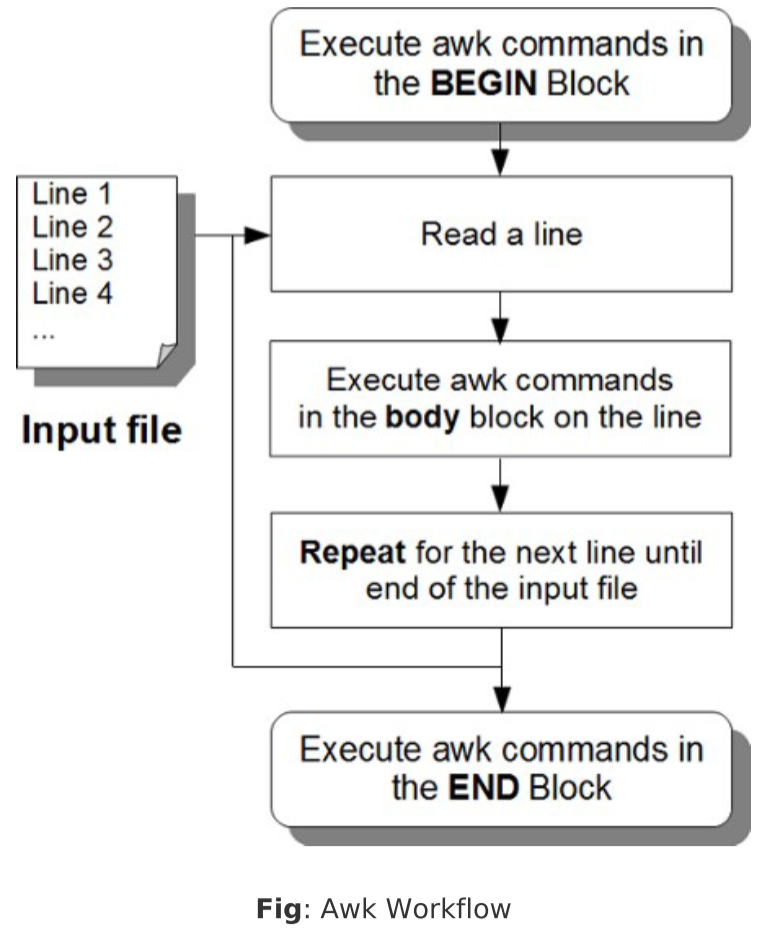

Awk是一个强大的处理文本的语言
- AWK is original AWK.
- NAWK is new AWK.
- GAWK is GNU AWK.所有的Linux发行版本都自带GAWK
在linux系统中，你可以看到/bin/awk是一个软链接，链接到/bin/gawk创建简单的实验文件employee.txt
employee-number,employee-name,employee-title123456$ vi employee.txt101,John Doe,CEO102,Jason Smith,IT Manager103,Raj Reddy,Sysadmin104,Anand Ram,Developer105,Jane Miller,Sales Manager
items.txt
item-number,item-description,item-category,cost,quantityavailable
items-sold.txt
item-number qty-sold-month1 qty-sold-month2 qty-sold-month3 qty-sold-month4 qty-sold-month5 qty-sold-month6
51. Awk Command Syntax
基本语法
awk -Fs ‘/pattern/ {action}’ input-file
(or)
awk -Fs ‘{action}’ intput-file
/pattern/ {action}：表示当匹配到了/pattern/则执行{action}
52. Awk Program Structure (BEGIN, body, END block)
Awk程序结构。一个典型的Awk命令有三个结构
BEGIN块只在程序运行之初执行一次，在输入文件所有行之前
- BEGIN块是打印的报告头和初始化变量的好地方。
- 您可以在开始块有一个或一个以上的awk命令。
- 关键字BEGIN应该大写字母指定。
- 开始块是可选的。
body block
基本语法：1/pattern/ {action}
主体块讲在每行执行一次
executed once for every line in the input file
END Block
基本语法：
和BEGIN块一样，只在结尾执行一次
- END块是打印报表页脚和做任何清理活动的好地方。
- 您可以在END块的一个或多个AWK命令。
- 关键字应该以大写字母指定。
- END块是可选的。
AWK处理流程图
一个简单的AWK例子
12345678$ awk 'BEGIN { FS=":";print "---header---" } \/mail/ {print $1} \END { print "---footer---"}' /etc/passwd---header--mailmailnull---footer---
创建AWK脚本执行
先穿件一个AWK脚本文件
然后执行命令
三个模块是都是可选的
一般来说，BEGIN和END模块都是可选的，主要用body块
但是，也有只用BEGIN块的
Multiple Input Files
多个输入文件直接在后面添加参数文件就行。
BEGIN块和END块都是只执行一次的，不管有多少个输入文件
53. Print Command（打印命令）
默认情况，print命令将输出所有行，就和cat命令一样awk '{print}' employee.txt
你也可以输出特定字段，默认分隔符为空格-F ' '
下列命令是等价的
而$0等价与全部
54. Pattern Matching（模式匹配）
和sed命令差不多，匹配到相应行才执行后续命令
可以看出print还能在中间拼接文字，只有匹配到的行输出了